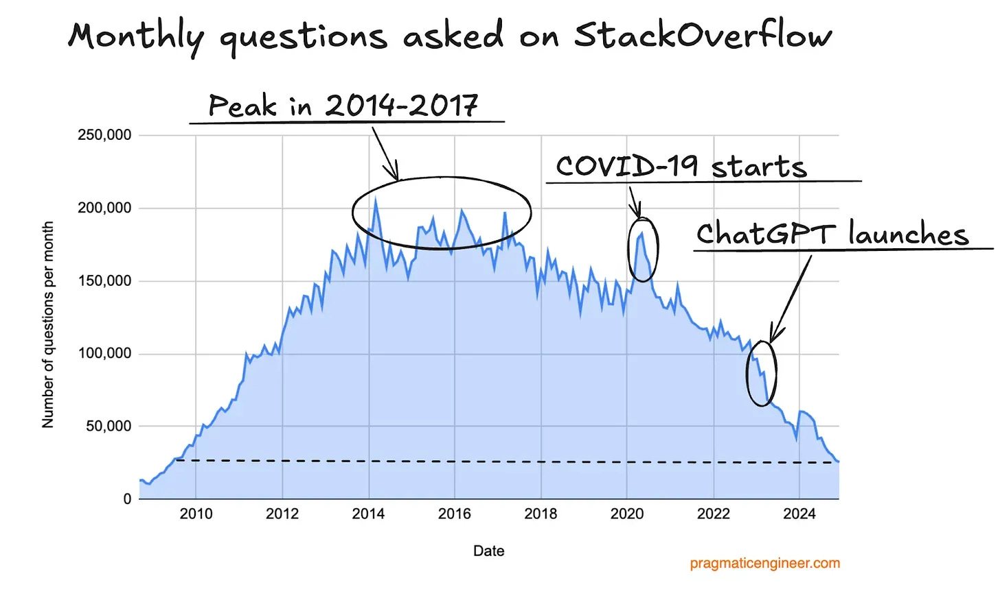
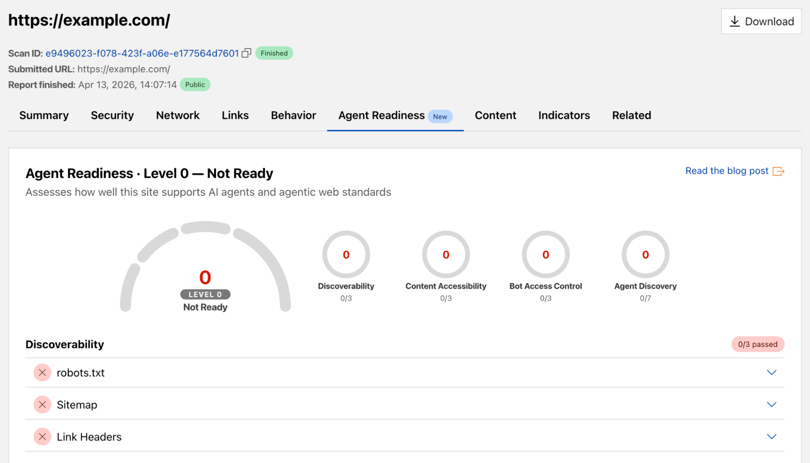

2024.05 Google 推出的 AI Overview 在搜尋結果頁頂部生成 AI 摘要，使用者在搜尋頁就拿到答案。
SparkToro / Similarweb 2026：Google 搜尋已有 68% 不產生任何點擊；AI Overview、instant answers 與搜尋結果頁 UI 讓使用者在結果頁就結束任務。
Search Engine Land：AI Overviews 擴張後，Google organic 點擊下滑 42%。
Pew
Research：出現 AI summary 時，使用者點搜尋結果的比例從 15% 降到 8%。
人類訪客在減少，但 AI 正以兩種身分成為你網站的新受眾——一種來「讀」，一種來「做」。
Cloudflare 觀測：Anthropic 的爬蟲每爬 70,900 個頁面，才帶來 1 位訪客。AI 在大量「閱讀」你的網站，卻幾乎不還流量。
Gartner 預測 2026 年 40% 企業應用將內建任務型 AI agent（2025 年 <5%）。Operator、Computer Use、Project Mariner 這類 browser/computer-use agent，正在把 AI 從「回答」推向「操作」。
三十年來，前端工程只服務一種使用者——人類的眼睛、手指與認知。2026 年起，AI Agent 成為網站的第二種使用者:它不看畫面、不點按鈕，要的是能被「理解」與「呼叫」的能力。
Cloudflare 2026.04 提出 Agent Readiness 框架，輸入任何網址，就從四個面向掃描你的網站對 AI Agent 的友善度，給出分級與具體改善建議。

WebMCP 是網頁給 agent 用的 API，而且就寫在頁面裡——不必另外架 server，網站本身就是 agent 的入口。
用 JS 在 runtime 註冊 tool，掌控度最高。
document.modelContext.registerTool({
name: 'prepare_leave_request',
description: '建立一張請假申請草稿',
inputSchema: {
type: 'object',
properties: { startDate, endDate, reason },
required: ['startDate', 'endDate'],
},
execute: async input =>
leaveRequestActions.prepareDraft(input),
});
inputSchema= 告知 agent 此 tool 需要的參數
execute= agent 呼叫這個 tool 時，實際要做的事
既有 HTML form 加上 toolname / tooldescription 屬性就能宣告成 tool——不寫 JS 的最低成本路徑。
<form toolname="prepare_leave_request" tooldescription="建立一張請假申請草稿"> <input name="startDate" type="date" required> <input name="endDate" type="date" required> <textarea name="reason"></textarea> <button type="submit">送出</button> </form>
自動推導input 的 name／type／required → 直接變 inputSchema
一表單兩用同一張表單，人能送、agent 也能呼叫，共用同一套檢查
自己機器上開旗標即可測試。但每位使用者都得手動開——只適合開發，不能給真實使用者。
chrome://flags/#enable-webmcp-testing
site owner 申請一次，使用者免動 chrome://flags 就能用——上 production 的方式。
<meta http-equiv="origin-trial"
content="…TRIAL_TOKEN…">
任務：20 項商品中，替「腸胃敏感成犬」找一款 ≤NT$1,200、評分 ≥4.6、有現貨的主食加入購物車——同一隻 agent，跑兩種模式現場計時。
使用者已登入 eForm，對 AI 說「幫我開下週去台中見 ACME 的出差單」——但開放給 agent 的能力，要先分有沒有副作用。
execute: () => {
document.querySelector(
'.btn-submit'
)?.click();
};
execute: async input => {
leaveFormStore.patch(input);
await validateLeaveRequest(
input
);
};
execute: async input =>
leaveRequestActions
.prepareDraft(input);
還在 Origin Trial（Chrome 149 起，本機開 flag 就能測）。API 還會變——光是 navigator 搬到 document 就改過一次，得一路盯著。
你開出來的每個 tool，都是新的攻擊面——prompt injection、被惡意頁面騙著呼叫。權限、稽核這些不會自己長出來，得自己設計。
Agent 會不會傳錯參數？出錯時你的訊息夠不夠它自己修回來？每個 tool 上線前都要先測過。
SEO 讓搜尋引擎找到你；AX 讓 AI Agent 正確使用你。
WebMCP 會放大你的架構——要先有好的 domain action 切分。
isitagentready.com 掃準備度；Chrome flag／OT token 馬上玩 WebMCP。